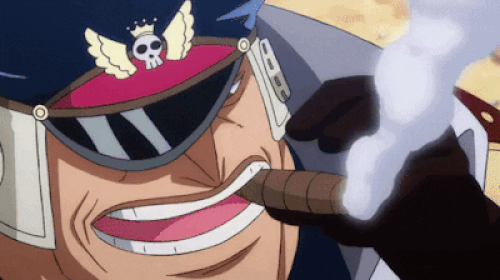
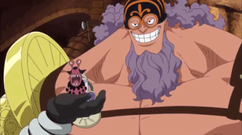
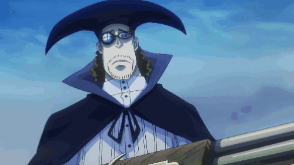
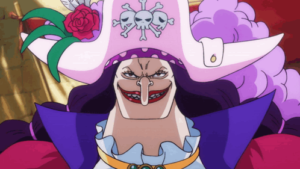
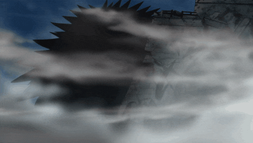
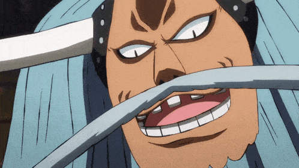
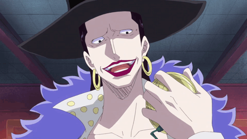
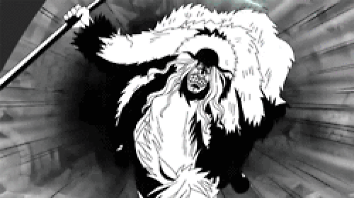
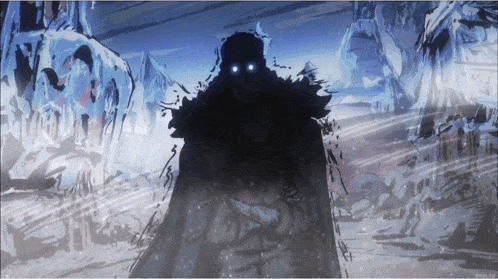

Marshall D. Teach


Marshall D. Teach, most commonly referred to by his epithet "Blackbeard", is the captain-turned-admiral of the Blackbeard Pirates, and one of the Four Emperors that rule over the New World. He is also the only known person in history to wield the powers of two Devil Fruits, as well as being part of a special bloodline, which is only known to a small number of individuals, including his own crew and the Five Elders.
Teach started out his pirate career as an apprentice of the Whitebeard Pirates, then later became a member of the crew's 2nd Division. However, he murdered Thatch, the 4th Division Commander, in order to steal the Yami Yami no Mi, a rare darkness-based Logia Devil Fruit with the power to nullify the Devil Fruit abilities of others. He then fled from Whitebeard's crew and, after defeating the infamous 2nd Division Commander Portgas D. Ace and handing him over to the Marines, was awarded a position among the Seven Warlords of the Sea. He only held the position briefly, though, using it to infiltrate the great underwater prison Impel Down and escaping with multiple infamous Level 6 prisoners recruited into his crew. Upon arriving at the Summit War of Marineford, he resigned from his position and murdered Whitebeard, mysteriously stealing his quake-generating power. This, along with his victory in the Payback War and conquest of the majority of Whitebeard's territories during the timeskip, resulted in his acknowledgement as one of the Four Emperors, as well as him being considered a part of the "Worst Generation" along with the eleven Supernovas. After the Rocky Port Incident, he turned the island of Hachinosu into his base of operations with the ambition of having it officially accepted into the World Government as the Blackbeard Kingdom.
Teach initially had no bounty; however, after resigning from the Seven Warlords, recruiting several dangerous criminals to his crew from Impel Down, and becoming one of the Four Emperors, he received a bounty of Beli2,247,600,000. Following the downfalls of Kaidou and Big Mom during the Wano Country Arc, his bounty was increased to Beli3,996,000,000 for unknown reasons.
Due to his actions throughout the series, namely his key role in the deaths of Portgas D. Ace and Whitebeard, Teach consistently serves as one of the primary antagonists of the entire series. During the series' first half, he is an unseen minor antagonist in the Drum Island Arc, a minor antagonist in the Jaya Arc, the secondary antagonist of the Post-Enies Lobby Arc, and one of the main antagonists of the Summit War Saga (specifically, the secondary antagonist of the Impel Down Arc and one of the three primary antagonists in the Marineford Arc). During the series' second half, he is a minor antagonist in the Dressrosa Arc, a supporting antagonist in the Egghead Arc and serves as one of the overarching main antagonists in the Final Saga.
- Role: Captain of the Blackbeard Pirates
- Bounty: 3,996,000,000 Beli
- Haki: Advanced Conquerors Haki, Armament Haki, Observation Haki
- Power: Logia: Dark-Dark Fruit, Paramecia: Quake-Quake Fruit
- Dream: To become the "King of the World"
Shiryu

Shiryu of the Rain is one of the Ten Titanic Captains of the Blackbeard Pirates, as the captain of the Second Ship.
He was originally introduced as the ex-Head Jailer of Impel Down, who had himself been imprisoned on Level 6 death row for his excessive, murderous violence against prisoners. When temporarily released to help Magellan quell the prison riot caused by Monkey D. Luffy and Marshall D. Teach coming to Impel Down, he chose to go against what he was ordered and instead assist the Blackbeard Pirates, ultimately deciding to join them.
Due to his actions and role, he is a supporting antagonist in the Impel Down and Marineford Arcs, a minor antagonist in the Egghead Arc, and a major antagonist in the Final Saga.
- Role: Second Ship Captain
- Bounty: Unknown
- Power: Paramecia: Clear-Clear Fruit
- Weapon: Sword
Jesus Burgess

Jesus Burgess, better known as the "Champion", is the helmsman and one of the Ten Titanic Captains of the Blackbeard Pirates, as the captain of the First Ship.
Due to his actions and role, he is a minor antagonist in the Jaya Arc, a supporting antagonist in the Impel Down, Marineford, and Dressrosa Arcs, a minor antagonist in the Egghead Arc, and a major antagonist in the Final Saga.
- Role: First Ship Captain
- Bounty: Unknown
- Haki: Armament Haki, Observation Haki
- Power: Paramecia: Strong-Strong Fruit
Van Augur

Van Augur, nicknamed "The Supersonic", is the sniper of the Blackbeard Pirates, as well as one of the Ten Titanic Captains, as the captain of the Third Ship.
Due to his actions and role, he is a minor antagonist in the Jaya Arc, a supporting antagonist in the Impel Down and Marineford Arcs, a minor antagonist in the Egghead Arc, and a major antagonist in the Final Saga.
- Role: Third Ship Captain
- Bounty: Unknown
- Haki: Armament Haki, Observation Haki
- Power: Paramecia: Warp-Warp Fruit
- Weapon: Sniper
Catarina Devon

Catarina Devon, known as the "Crescent Moon Hunter", was the most dangerous female pirate ever to be imprisoned in Impel Down within the entire age of pirates. She was freed by Marshall D. Teach and recruited to the Blackbeard Pirates, where she joined the Ten Titanic Captains as captain of the sixth ship.
Due to her actions and role, she is a supporting antagonist in the Marineford Arc, a minor antagonist in the Egghead Arc and a major antagonist in the Final Saga.
- Role: Sixth Ship Captain
- Bounty: Unknown
- Power: Mythical Zoan: Dog-Dog Fruit, Model: Nine Tailed Fox
Sanjuan Wolf

Sanjuan Wolf is an enormous giant, known as "Colossal Battleship" for his size, and was originally one of the legendary criminals who was given a life sentence in Level 6 of Impel Down, as his crimes were so atrocious they had to effectively be erased from history itself. He was initially mentioned briefly by Emporio Ivankov.
He was eventually freed from prison by Marshall D. Teach, and since then has become a member of the Blackbeard Pirates. He is currently one of the Ten Titanic Captains, as the captain of the Seventh Ship of the Blackbeard Pirates.
Due to his actions and role, he is a supporting antagonist in the Marineford Arc, a minor antagonist in the Egghead Arc, and a major antagonist in the Final Saga.
- Role: Seventh Ship Captain
- Bounty: Unknown
- Power: Paramecia: Huge-Huge Fruit
Avalo Pizarro

Avalo Pizarro, also known as the "Corrupt King", was one of the criminals who was given a life sentence in Level 6 of Impel Down, as his crimes were so atrocious, he had to effectively be erased from history. Prior to his life of crime, he was once a king of a North Blue kingdom that overthrew him for his despotic ways. He has since been freed by Marshall D. Teach and has become a member of the Blackbeard Pirates.
He is currently one of the Ten Titanic Captains, as the captain of the Fourth Ship.
Due to his actions and role, he is a supporting antagonist in the Marineford Arc, a minor antagonist in the Egghead Arc, and a major antagonist in the Final Saga.
- Role: Fourth Ship Captain
- Bounty: Unknown
- Power: Paramecia: Island-Island Fruit
Lafitte

Laffitte, nicknamed "Demon Sheriff", is the navigator, chief of staff, and the Titanic Captain of the Blackbeard Pirates' Fifth Ship. He is also a former West Blue policeman known for countless acts of police brutality, which resulted in his exile from that sea
Due to his actions and role, he is a minor antagonist in the Jaya Arc, a supporting antagonist in the Impel Down and Marineford Arcs, and a major antagonist in the Final Saga.
- Role: Fifth Ship Capatain
- Bounty: Unknown
- Power: Zoan: Unknown
Vasco Shot

Vasco Shot, monikered "Heavy Drinker", is one of the Ten Titanic Captains of the Blackbeard Pirates, as the captain of the Eighth Ship. He was originally one of several legendary criminals given a life sentence on Impel Down's Level 6, before being freed by Blackbeard and joining him.
Shot's role in the Blackbeard Pirates involves using his strength and skills to further the crew's objectives. His power and determination make him a significant threat to their enemies.
- Role: Eight Ship Captain
- Bounty: Unknown
- Power: Paramecia: Glug-Glug Fruit
Doc Q

Doc Q, known as "Death God", is the doctor of the Blackbeard Pirates. Ironically, he has a sick body and needs his horse, Stronger (who is just as sick as he is), to get around.
He is currently one of the Ten Titanic Captains, as the captain of the Ninth Ship.
Due to his actions and role, he is a minor antagonist in the Jaya Arc, a supporting antagonist in the Impel Down and Marineford Arcs, a minor antagonist in the Egghead Arc, and a major antagonist in the Final Saga.
- Role: Ninth Ship Captain
- Bounty: Unknown
- Power: Paramecia: Sick-Sick Fruit
Kuzan

Kuzan, better known by his alias Aokiji, is one of the Ten Titanic Captains of the Blackbeard Pirates, as the captain of the Tenth Ship. Before joining Blackbeard's crew, he served as a Marine Admiral,[1] having been taught by Monkey D. Garp. He was nominated by Sengoku for the position of Fleet Admiral; however, after fighting Sakazuki for the position and losing, Kuzan resigned from the Marines.
Kuzan is a major antagonist of the Long Ring Long Land Arc, one of the two secondary antagonists of the Marineford Arc (along with Borsalino), a minor antagonist in the Egghead Arc, and a major antagonist in the Final Saga. In the anime, he is one of the main antagonists of the Foxy's Return Arc.
- Role: Tenth Ship Captain
- Bounty: Unknown
- Power: Logia: Ice-Ice Fruit